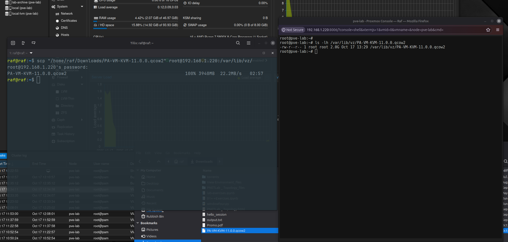
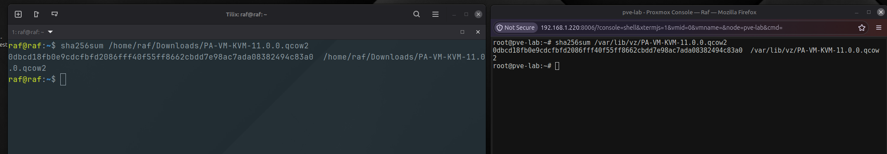
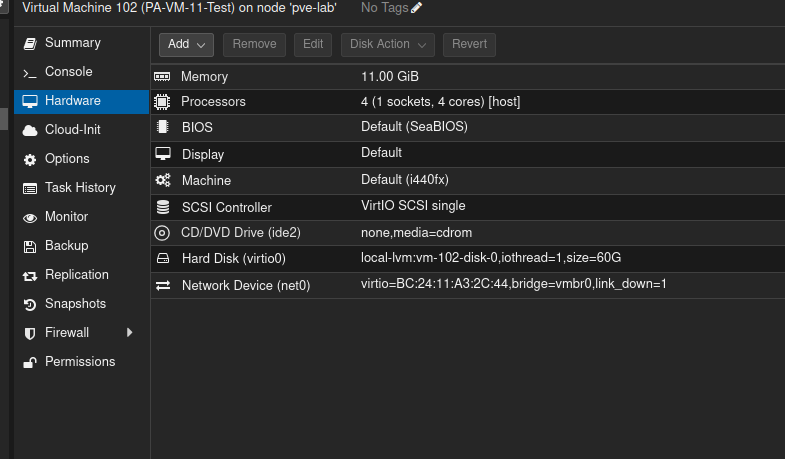
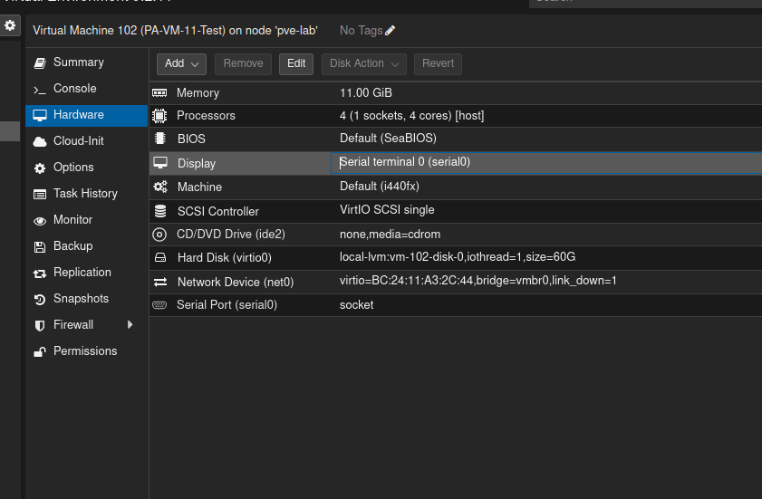
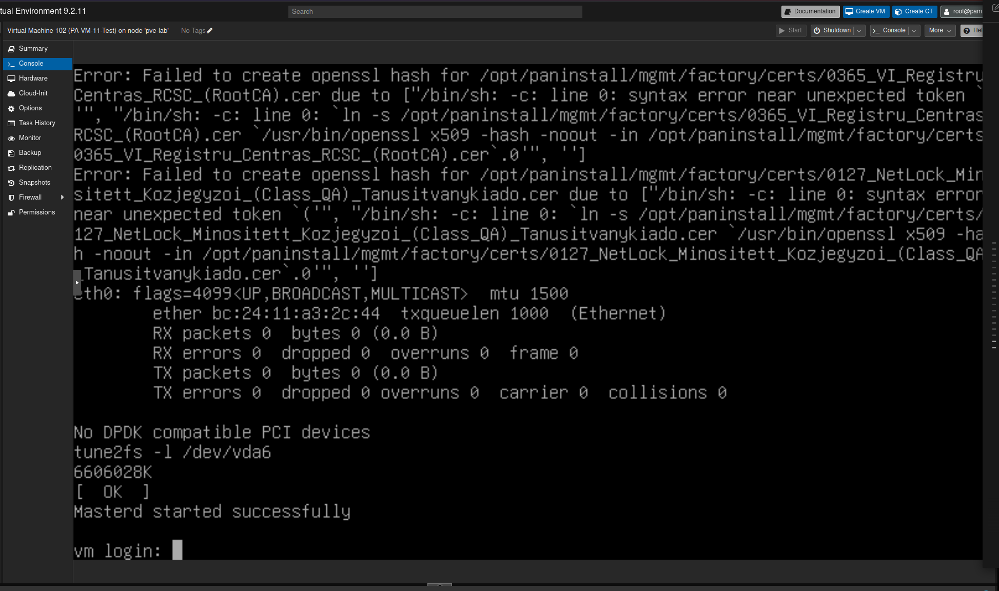
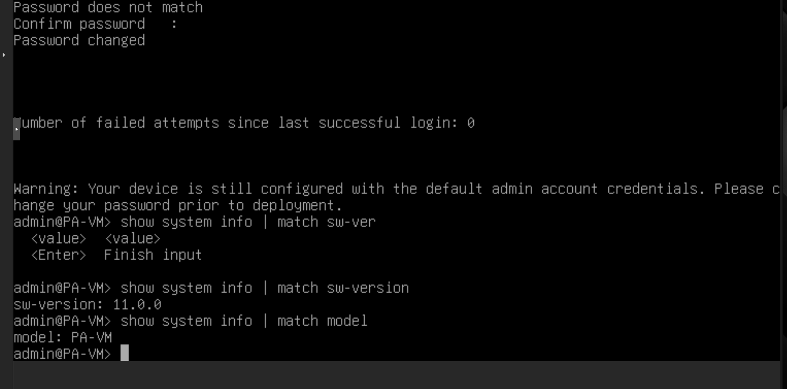
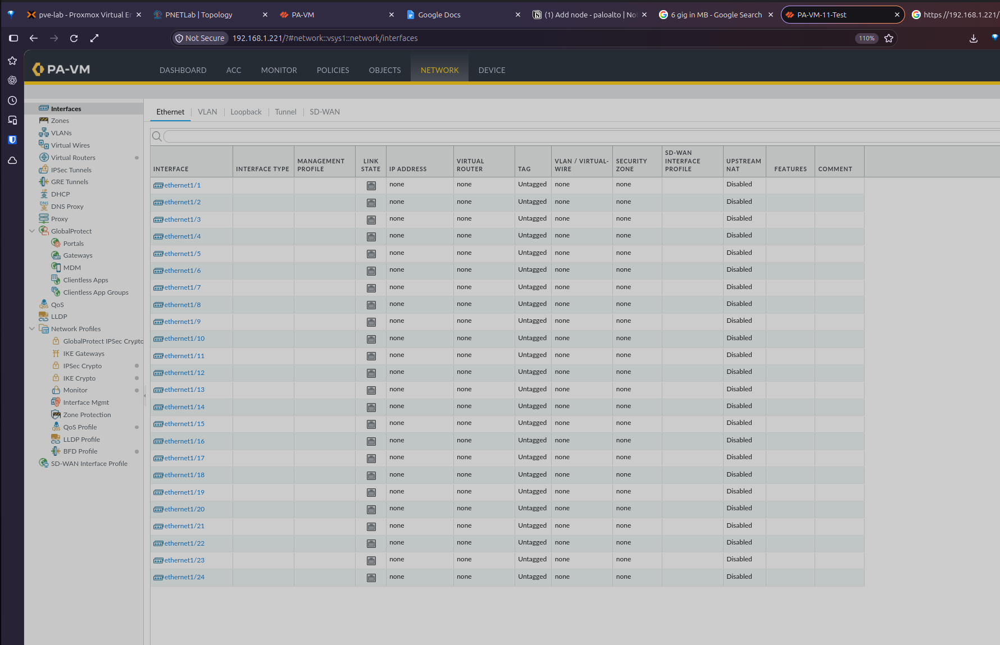
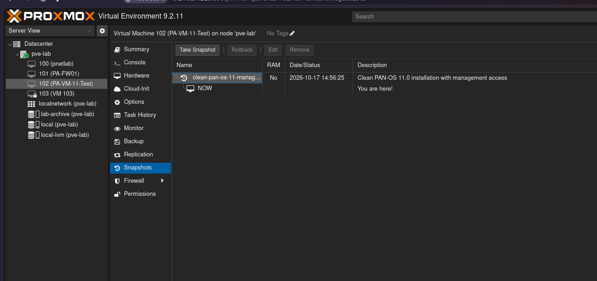

Independent firewall appliance
Outcome
The finished VM runs PAN-OS 11 directly on Proxmox/KVM rather than inside a network-emulation platform. This removes a nested virtualisation layer and produced a noticeably faster management experience in the lab.
The firewall booted successfully, accepted a static management configuration, and presented the PAN-OS web interface at its dedicated lab address.
This procedure assumes a legitimately obtained Palo Alto VM-Series KVM image and appropriate licensing. Example addresses are private lab values and should be replaced for another environment.
Stage 1
Transfer and verify the QCOW2 image
The source image was copied from the workstation to temporary storage on the Proxmox host. The transfer must be initiated from the workstation because the local file path does not exist inside the Proxmox shell.
scp "/path/to/PA-VM-KVM-11.0.0.qcow2" \
root@<PROXMOX-IP>:/var/lib/vz/
File size alone was not treated as proof of integrity. SHA-256 was calculated on both systems and the values were compared before the VM was created.
# Workstation
sha256sum /path/to/PA-VM-KVM-11.0.0.qcow2
# Proxmox host
sha256sum /var/lib/vz/PA-VM-KVM-11.0.0.qcow2
Stage 2
Create a safe, empty VM shell
A QCOW2 file contains the appliance disk but not a complete Proxmox hardware definition. The VM therefore needs to be created without installation media and without the wizard's placeholder disk.
- BIOS: SeaBIOS; default i440fx machine.
- CPU: one socket, four cores, type
host. - Memory: 11 GiB with ballooning disabled.
- Management NIC: VirtIO on the management bridge, initially marked disconnected.
- Guest agent: disabled.
Keeping the management NIC disconnected is an important safety control: a factory firewall may use a default address that conflicts with an existing gateway or device.
Stage 3
Import and attach the PAN-OS disk
The verified image was imported into the Proxmox LVM-thin storage assigned to the firewall VM:
qm importdisk <VMID> \
/var/lib/vz/PA-VM-KVM-11.0.0.qcow2 \
local-lvmAfter import, the volume appears as an unused disk. It was attached as virtio0, with default no-cache behaviour and I/O threading enabled. The VM boot order was then reduced to the VirtIO disk only.

virtio0; the management NIC remains disconnected.Stage 4
Add a serial console and complete the first boot
A serial port was added at index 0, and the Proxmox display was changed to Serial terminal 0. This provides reliable console access during the initial PAN-OS boot, before management networking is enabled.

serial0 uses a socket and the display is mapped to the same terminal.The first boot was allowed to complete without reconnecting the management NIC. The appearance of vm login: confirmed that the system reached an interactive PAN-OS console.

After the mandatory administrator-password change, the software version and platform type were confirmed from the operational CLI.
show system info | match sw-version
show system info | match model
Stage 5
Configure management access before connecting the NIC
An unused address outside the local DHCP pool was selected, then configured from the serial console. Replace the example values below with addresses appropriate to the target network.
configure
set deviceconfig system type static
set deviceconfig system ip-address <MGMT-IP> netmask <NETMASK> default-gateway <GATEWAY>
set deviceconfig system dns-setting servers primary <DNS-IP>
set deviceconfig system hostname <HOSTNAME>
commitOnly after a successful commit was the Proxmox Disconnect flag cleared on net0. Ping and HTTPS were then used to validate management access.

Stage 6
Create a clean rollback point and reusable base
Before adding dataplane interfaces or policies, PAN-OS was shut down cleanly and a snapshot was created without RAM. This preserves a known-good point with management access.
request shutdown system
Template strategy
For future labs, create a full clone, keep its management NIC disconnected, and convert the clone—not the working firewall—into a Proxmox template. Every deployed clone must receive a unique management address, identity, and appropriate licence before being connected.
Engineering reflection
Lessons learned
Verify before importing
A matching cryptographic hash is stronger evidence than a rounded file-size display.
Disconnect before configuring
Keeping the management NIC down prevents factory addressing from creating a network conflict.
Understand the appliance format
Unlike an OVA, a QCOW2 image supplies a disk but not the VM hardware definition, so CPU, memory, console, network, and boot settings must be created.
Preserve a known-good state
A snapshot and golden template shorten recovery and make later lab branches repeatable.
Running the firewall directly on Proxmox also provided a useful comparison with the nested PNETLab deployment. The direct KVM instance felt more than three times faster during management tasks, making it the stronger candidate for future independent firewall testing.
Continue exploring
From virtual appliance to OT security boundary.
Continue with Part 2 to attach the data-plane bridges, configure the IT, OT, and IDMZ zones, install routes, and validate the operational interfaces.